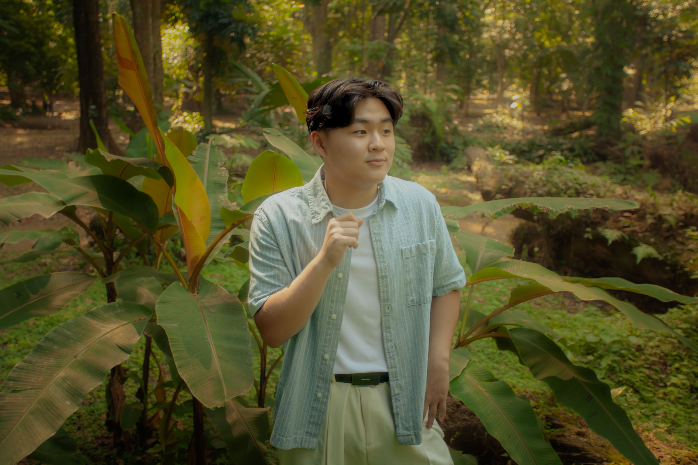
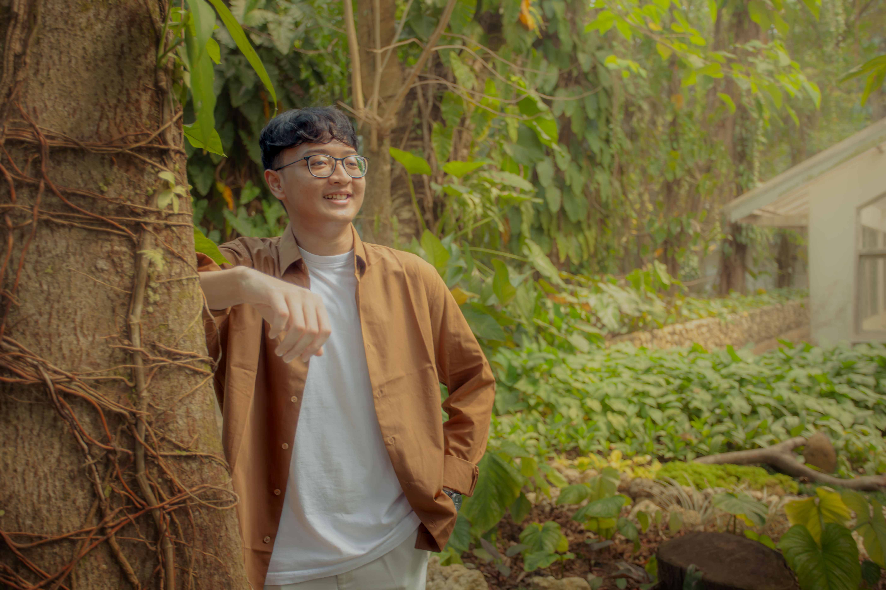
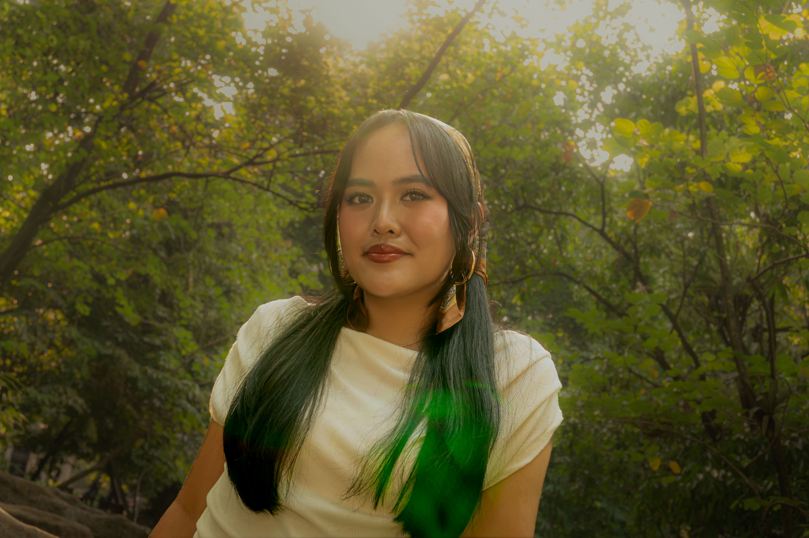

Cinematic Vision,
Engineered Precision
Karya video komprehensif mengintegrasikan empat elemen multimedia inti: teks, audio stereo terkalibrasi, sinematografi dinamis, dan motion graphics terstandarisasi 60 FPS.
Karya Video Multimedia
Streaming video beresolusi tinggi di-host melalui Vimeo Player API untuk menjamin kestabilan bitrate dan kualitas audio stereo tanpa kompresi berlebih.
Parameter & Metadata Teknis
Rincian spesifikasi teknis video sesuai rubrik penilaian kurikulum AoL Multimedia Systems:
Display Resolution
1920 × 1080
Full HD (1080p) • Rasio 16:9
Standar rasio layar sinematik lanskap yang optimal untuk display desktop dan integrasi pemutaran web responsif.
Temporal Sampling
60.00 FPS
Progressive Scan (1080p60)
Frame rate konstan tinggi menjamin pergerakan visual animasi dan adegan gerak cepat berjalan mulus tanpa motion judder.
Acoustic Architecture
Stereo 2.0
48.0 kHz • 320 kbps AAC
Konfigurasi kanal kiri-kanan terpisah memberikan sensasi kedalaman ruang spasial yang presisi untuk voice-over dan background score.
Container & Encoding
H.264 / AVC
MP4 • High Profile Level 4.2
Kompatibilitas universal di seluruh browser modern dengan efisiensi kompresi visual yang stabil pada bitrate tinggi.
Implementasi 4 Elemen Multimedia
Penerapan empat pilar utama konten multimedia sesuai kriteria penilaian:
1. Elemen Teks (Typography & Subtitles)
Menggunakan tipografi modern sans-serif dengan rasio kontras tinggi (WCAG AAA compliant), lower-third titles untuk penamaan narasumber, serta subtitle bilingual terintegrasi demi kemudahan akses penonton.
2. Elemen Audio (Voice & Sound Effects)
Melibatkan rekaman voice-over terkompresi dengan dynamic range limiter, foley sound effects terisolasi, serta musik latar (BGM) bebas royalti yang di-mixing menggunakan standar LUFS terstandarisasi (-14 LUFS).
3. Elemen Video (Cinematography)
Penerapan kaidah komposisi visual seperti Rule of Thirds, kedalaman ruang (shallow depth of field), color grading terkalibrasi rec.709, serta transisi match-cut yang dinamis antarsekuens rekaman.
4. Elemen Animasi (Motion Graphics)
Penyisipan motion graphics 2D pada intro logo, diagram alur data, transisi kinetic typography, dan efek visual pendukung yang dirender pada 60 FPS untuk mempertahankan estetika gerak yang halus.
Analisis Multimedia Delivery Method
Adaptive Bitrate Streaming (ABR via CDN)
Konten video didistribusikan melalui arsitektur Content Delivery Network (CDN) global Vimeo menggunakan protokol HLS (HTTP Live Streaming) / MPEG-DASH. Sistem ini secara dinamis menyesuaikan resolusi penonton sesuai bandwidth tanpa menyebabkan buffering.
Web Single-Page Architecture (Client-Side Rendering)
Portal web dirancang sebagai Single-Page Application (SPA) yang ringan. Memisahkan pengiriman payload UI interaktif (HTML/CSS/JS) dengan stream video resolusi tinggi mengurangi latensi First Contentful Paint (FCP) hingga di bawah 1 detik.
Anggota Kelompok
Tim pengembang proyek tugas akhir Assessment of Learning (AoL) Multimedia Systems (3 Anggota):

EVANEvan
Bertanggung jawab atas storyboard narasi, pengoperasian kamera, pencahayaan adegan, serta color grading footage video akhir.

FADHILFadhil
Menangani audio mastering 2.0 Stereo (-14 LUFS), kurasi efek foley, voice-over limiter, serta animasi motion graphic 60 FPS.

MISELMisel
Merancang single-page web responsif, engine parallax berbasis modern CSS & RAF, serta verifikasi standar kepatuhan teknis metadata.